Matrices et applications linéaires
Chapitre 3 de L. Graissot (ECAM AM2, 2026-2027) : rang, matrice d'une application linéaire, changement de base, matrices semblables. La page contient le cours complet (14 exemples du polycopié corrigés pas à pas), 3 exercices créés et le TD3 corrigé (exercices 1 → 13). Les exercices 10 à 13 viennent de la dernière page du TD, fournie séparément.
1. Résumé de cours détaillé
Cours de L. Graissot (ECAM AM2, 2026-2027), chapitre 3, pages 29 → 45 du polycopié. Dans tout le chapitre, \(\mathbb K=\mathbb R\) ou \(\mathbb C\) ; les exemples numériques du cours sont corrigés pas à pas ci-dessous.
1.1 Rang d'une famille finie de vecteurs
Déterminer le rang de \(\{v_1,v_2,v_3\}\) dans \(\mathbb R^4\), avec \(v_1=\begin{pmatrix}1\\0\\1\\0\end{pmatrix}\), \(v_2=\begin{pmatrix}0\\1\\1\\1\end{pmatrix}\), \(v_3=\begin{pmatrix}-1\\1\\0\\1\end{pmatrix}\).
Rang de la famille
Étape 1 : encadrer le rang
- Il y a 3 vecteurs dans \(\mathbb R^4\) : \(\operatorname{rg} \le 3\).
- \(v_1 \neq 0\) : \(\operatorname{rg} \ge 1\).
- \(v_1\) et \(v_2\) ne sont pas colinéaires (leurs coordonnées 1 et 2 diffèrent) : \(\operatorname{rg} \ge 2\).
Le rang vaut 2 ou 3.
Étape 2 : chercher une relation de dépendance
\(\lambda_1v_1 + \lambda_2v_2 + \lambda_3v_3 = 0\) donne :
\[ \begin{cases}\lambda_1 - \lambda_3 = 0\\ \lambda_2 + \lambda_3 = 0\\ \lambda_1 + \lambda_2 = 0\\ \lambda_2 + \lambda_3 = 0\end{cases} \iff \lambda_1 = \lambda_3,\ \lambda_2 = -\lambda_3 \](La 3ᵉ équation est alors vérifiée.) Avec \(\lambda_3 = 1\) : \(v_1 - v_2 + v_3 = 0\). La famille est liée.
1.2 Rang d'une matrice
Rang de \(A=\begin{pmatrix}2&6&-1&0\\1&3&-\tfrac12&0\end{pmatrix}\in\mathcal M_{2,4}(\mathbb K)\).
Rang de \(A\)
Étape 1 : les colonnes
\(v_1 = \binom21\), \(v_2 = \binom63\), \(v_3 = \binom{-1}{-1/2}\), \(v_4 = \binom00\).
Étape 2 : relations
\(v_2 = 3v_1\), \(v_3 = -\frac12v_1\), \(v_4 = 0\cdot v_1\) : toutes sont colinéaires à \(v_1 \neq 0\).
1.3 Matrices échelonnées et opérations conservant le rang
- \(C_i\leftarrow\lambda C_i\) avec \(\lambda\neq0\) (multiplier une colonne par un scalaire non nul) ;
- \(C_i\leftarrow C_i+\lambda C_j\), \(j\neq i\) (ajouter à une colonne un multiple d'une autre) ;
- \(C_i\leftrightarrow C_j\) (échanger deux colonnes).
Rang de la famille \(v_1=\begin{pmatrix}1\\1\\1\\1\end{pmatrix}\), \(v_2=\begin{pmatrix}-1\\2\\0\\1\end{pmatrix}\), \(v_3=\begin{pmatrix}3\\2\\-1\\-3\end{pmatrix}\), \(v_4=\begin{pmatrix}3\\5\\0\\-1\end{pmatrix}\), \(v_5=\begin{pmatrix}3\\8\\1\\1\end{pmatrix}\).
Rang par la méthode de Gauss (opérations sur les colonnes)
Étape 1 : la matrice
\[ A = \begin{pmatrix}1&-1&3&3&3\\1&2&2&5&8\\1&0&-1&0&1\\1&1&-3&-1&1\end{pmatrix} \qquad \operatorname{rg}A \le \min(4, 5) = 4 \]Étape 2 : pivot \(C_1\)
\(C_2 \leftarrow C_2 + C_1\), \(C_3 \leftarrow C_3 - 3C_1\), \(C_4 \leftarrow C_4 - 3C_1\), \(C_5 \leftarrow C_5 - 3C_1\) :
\[ \begin{pmatrix}1&0&0&0&0\\1&3&-1&2&5\\1&1&-4&-3&-2\\1&2&-6&-4&-2\end{pmatrix} \]Étape 3 : pivot \(C_3\) (coefficient \(-1\) en ligne 2)
\(C_2 \leftarrow C_2 + 3C_3\), \(C_4 \leftarrow C_4 + 2C_3\), \(C_5 \leftarrow C_5 + 5C_3\) :
\[ \begin{pmatrix}1&0&0&0&0\\1&0&-1&0&0\\1&-11&-4&-11&-22\\1&-16&-6&-16&-32\end{pmatrix} \]Étape 4 : colonnes proportionnelles
\(C_4 = C_2\) et \(C_5 = 2C_2\) : elles s'annulent. Il reste trois colonnes non nulles, \(C_1\), \(C_3\), \(C_2\), qui commencent par 0, 1 puis 2 zéros : la matrice est échelonnée.
Vérification : \(v_1 + v_2 + v_3 = (3, 5, 0, -1) = v_4\) et \(2v_1 + 2v_2 + v_3 = (3, 8, 1, 1) = v_5\).
1.4 Rang et matrice inversible
1.5 Rang engendré par les vecteurs lignes
2.1 Construction d'une application linéaire ; rang d'une application linéaire
Démonstration.
- Unicité. Si \(f\) existe, pour \(x=\sum_ix_ie_i\) (coordonnées uniques) la linéarité donne \(f(x)=\sum_ix_if(e_i)=\sum_ix_iv_i\quad(*)\). Donc \(f\) est entièrement déterminée.
- Existence. On définit \(f\) par \((*)\). Si \(x,y\) ont pour coordonnées \((x_i),(y_i)\) alors \(\lambda x+\mu y\) a pour coordonnées \((\lambda x_i+\mu y_i)\) et \(f(\lambda x+\mu y)=\sum_i(\lambda x_i+\mu y_i)v_i=\lambda\sum_ix_iv_i+\mu\sum_iy_iv_i=\lambda f(x)+\mu f(y)\) : \(f\) est linéaire. Enfin \(e_i\) a pour coordonnées \((0,\dots,1,\dots,0)\), donc \(f(e_i)=1\cdot v_i=v_i\). \(\square\)
Il existe une unique application linéaire \(f:\mathbb R^n\to\mathbb R[X]\) telle que \(f(e_i)=(X+1)^i\) pour \(i=1,\dots,n\) (\((e_i)\) base canonique).
Expression de \(f\)
Pour \(x = (x_1, \dots, x_n) = \sum x_ie_i\), la linéarité donne :
Preuve. Soit \(y\in\operatorname{Im}f\) : \(y=f(x)\) avec \(x=\sum x_ie_i\), donc \(y=\sum x_if(e_i)\) par linéarité : tout élément de \(\operatorname{Im}f\) est combinaison linéaire des \(f(e_i)\). \(\square\)
Rang de \(f:\mathbb R^3\to\mathbb R^2\), \(f(x,y,z)=(3x-4y+2z,\ 2x-3y-z)\).
Rang et noyau de \(f\)
Étape 1 : images de la base canonique
\(f(e_1) = (3, 2)\), \(f(e_2) = (-4, -3)\), \(f(e_3) = (2, -1)\). Rang \(\le \min(3, 2) = 2\).
Étape 2 : deux vecteurs libres
\[ \det\begin{pmatrix}3&-4\\2&-3\end{pmatrix} = -9 + 8 = -1 \neq 0 \]\(f(e_1)\) et \(f(e_2)\) sont libres : \(\operatorname{rg}f \ge 2\).
Étape 3 : noyau (contrôle)
On élimine \(z\) : \(2\times(2) + (1)\) donne \(7x - 10y = 0\), soit \(x = \frac{10}{7}y\), puis \(z = 2x - 3y = -\frac17y\). Pour \(y = -7\) :
\[ \operatorname{Ker}f = \operatorname{Vect}\big((-10, -7, 1)\big) \]Vérification : \(3(-10) - 4(-7) + 2 = 0\) et \(2(-10) - 3(-7) - 1 = 0\).
2.2 Théorème du rang
En pratique la formule sert à trouver la dimension du noyau connaissant le rang, ou l'inverse.
\(f(x_1,x_2,x_3,x_4)=(x_1-x_2+x_3,\ 2x_1+2x_2+6x_3+4x_4,\ -x_1-2x_3-x_4)\). Rang de \(f\) et \(\dim\operatorname{Ker}f\).
Rang et dimension du noyau
Étape 1 : la matrice
Colonnes = images de \(e_1, \dots, e_4\) :
\[ A = \begin{pmatrix}1&-1&1&0\\2&2&6&4\\-1&0&-2&-1\end{pmatrix} \qquad \operatorname{rg}A \le \min(4, 3) = 3 \]Étape 2 : échelonner les lignes
On utilise \(\operatorname{rg}A = \operatorname{rg}{}^tA\), donc on peut opérer sur les lignes. \(L_2 \leftarrow L_2 - 2L_1\), \(L_3 \leftarrow L_3 + L_1\), puis \(L_2 \leftarrow \frac14L_2\), \(L_3 \leftarrow L_3 + L_2\) :
\[ \begin{pmatrix}1&-1&1&0\\0&1&1&1\\0&0&0&0\end{pmatrix} \]Étape 3 : base du noyau (contrôle)
Le système réduit donne \(x_2 = -x_3 - x_4\) et \(x_1 = x_2 - x_3 = -2x_3 - x_4\), avec \(x_3, x_4\) libres :
\[ (x_1, x_2, x_3, x_4) = x_3(-2, -1, 1, 0) + x_4(-1, -1, 0, 1) \]2.3 Applications linéaires entre deux espaces de même dimension
Un isomorphisme est une application linéaire bijective ; sa réciproque est aussi linéaire.
Preuve. \(f\) surjective : \(F=\operatorname{Im}f\) est engendré par l'image d'une base de \(E\), donc \(\dim F\le\dim E\). Avec \(f^{-1}\) (isomorphisme aussi) : \(\dim E\le\dim F\). \(\square\)
Preuve. \(f\) injective ⇔ \(\operatorname{Ker}f=\{0\}\) ⇔ (théorème du rang) \(\dim\operatorname{Im}f=\dim E\) ⇔ (hypothèse \(\dim E=\dim F\)) \(\dim\operatorname{Im}f=\dim F\) ⇔ \(\operatorname{Im}f=F\) ⇔ \(f\) surjective. \(\square\)
Montrer que \(f:\mathbb R^2\to\mathbb R^2\), \(f(x,y)=(x-y,\ x+y)\) est un isomorphisme.
\(f\) est un isomorphisme
Étape 1 : noyau
\[ (x, y) \in \operatorname{Ker}f \iff \begin{cases}x - y = 0\\ x + y = 0\end{cases} \iff x = y = 0 \]Étape 2 : contrôle matriciel
\(\operatorname{Mat}(f) = \begin{pmatrix}1&-1\\1&1\end{pmatrix}\), de déterminant \(1 + 1 = 2 \neq 0\).
3.1 Matrice associée à une application linéaire
\(f:\mathbb R^3\to\mathbb R^2\), \(f(x_1,x_2,x_3)=(x_1+x_2-x_3,\ x_1-2x_2+3x_3)\) ; \(\mathcal B=(e_1,e_2,e_3)\) et \(\mathcal B'=(f_1,f_2)\) bases canoniques. (1) Matrice de \(f\) dans \((\mathcal B,\mathcal B')\) ? (2) Avec \(\epsilon_1=\begin{pmatrix}1\\1\\0\end{pmatrix}\), \(\epsilon_2=\begin{pmatrix}1\\0\\1\end{pmatrix}\), \(\epsilon_3=\begin{pmatrix}0\\1\\1\end{pmatrix}\), \(\phi_1=\begin{pmatrix}1\\0\end{pmatrix}\), \(\phi_2=\begin{pmatrix}1\\1\end{pmatrix}\) : montrer que \(\mathcal B_0=(\epsilon_i)\) est une base de \(\mathbb R^3\), \(\mathcal B_0'=(\phi_1,\phi_2)\) une base de \(\mathbb R^2\), puis donner la matrice de \(f\) dans \((\mathcal B_0,\mathcal B_0')\).
1) Matrice dans les bases canoniques
\(f(e_1) = (1, 1)\), \(f(e_2) = (1, -2)\), \(f(e_3) = (-1, 3)\).
2) Matrice dans \((\mathcal B_0, \mathcal B_0')\)
Étape 1 : ce sont des bases
\[ \det(\epsilon_1, \epsilon_2, \epsilon_3) = \begin{vmatrix}1&1&0\\1&0&1\\0&1&1\end{vmatrix} = 1(0 - 1) - 1(1 - 0) + 0 = -2 \neq 0 \qquad \det(\phi_1, \phi_2) = \begin{vmatrix}1&1\\0&1\end{vmatrix} = 1 \neq 0 \]Étape 2 : décomposer une image sur \((\phi_1, \phi_2)\)
\(\binom ab = \alpha\phi_1 + \beta\phi_2 = \binom{\alpha + \beta}{\beta}\), donc \(\beta = b\) et \(\alpha = a - b\).
- \(f(\epsilon_1) = f(1, 1, 0) = (2, -1)\) : \(\beta = -1\), \(\alpha = 3\).
- \(f(\epsilon_2) = f(1, 0, 1) = (0, 4)\) : \(\beta = 4\), \(\alpha = -4\).
- \(f(\epsilon_3) = f(0, 1, 1) = (0, 1)\) : \(\beta = 1\), \(\alpha = -1\).
Étape 3 : contrôle par la formule de changement de base
Avec \(P = \begin{pmatrix}1&1&0\\1&0&1\\0&1&1\end{pmatrix}\), \(Q^{-1} = \begin{pmatrix}1&-1\\0&1\end{pmatrix}\) : \(AP = \begin{pmatrix}2&0&0\\-1&4&1\end{pmatrix}\), puis \(Q^{-1}AP = \begin{pmatrix}3&-4&-1\\-1&4&1\end{pmatrix}\).
3.2 Opérations sur les applications linéaires et les matrices
Démonstration. Notons \(A=(a_{ij})=\operatorname{Mat}_{\mathcal B,\mathcal B'}(f)\), \(B=(b_{ij})=\operatorname{Mat}_{\mathcal B',\mathcal B''}(g)\), \(C=\operatorname{Mat}_{\mathcal B,\mathcal B''}(g\circ f)\). Pour le 1ᵉʳ vecteur de base :
\[ (g\circ f)(e_1)=g\Big(\sum_{k}a_{k1}f_k\Big)=\sum_ka_{k1}g(f_k)=\sum_ka_{k1}\sum_lb_{lk}g_l=\sum_l\Big(\sum_kb_{lk}a_{k1}\Big)g_l. \]La 1ʳᵉ colonne de \(C\) est donc \(\big(\sum_kb_{lk}a_{k1}\big)_l\), qui est exactement la 1ʳᵉ colonne de \(BA\) (ligne \(l\) de \(B\) fois colonne 1 de \(A\)). Le même calcul pour \(e_2,\dots,e_p\) donne les autres colonnes : \(C=BA\). \(\square\)
\(f:E=\mathbb R^2\to F=\mathbb R^3\), \(g:F\to G=\mathbb R^2\) ; bases \(\mathcal B=(e_1,e_2)\), \(\mathcal B'=(f_1,f_2,f_3)\), \(\mathcal B''=(g_1,g_2)\) ; \(A=\operatorname{Mat}_{\mathcal B,\mathcal B'}(f)=\begin{pmatrix}1&0\\1&1\\0&2\end{pmatrix}\in\mathcal M_{3,2}\), \(B=\operatorname{Mat}_{\mathcal B',\mathcal B''}(g)=\begin{pmatrix}2&-1&0\\3&1&2\end{pmatrix}\in\mathcal M_{2,3}\). Calculer \(C=\operatorname{Mat}_{\mathcal B,\mathcal B''}(g\circ f)\) de deux façons.
Façon 1 : par l'application \(g\circ f\)
Étape 1 : lire les colonnes
\(f(e_1) = f_1 + f_2\), \(f(e_2) = f_2 + 2f_3\) ; \(g(f_1) = 2g_1 + 3g_2\), \(g(f_2) = -g_1 + g_2\), \(g(f_3) = 2g_2\).
Étape 2 : composer
\[ (g \circ f)(e_1) = g(f_1) + g(f_2) = g_1 + 4g_2 \qquad (g \circ f)(e_2) = g(f_2) + 2g(f_3) = -g_1 + 5g_2 \]Façon 2 : par le produit de matrices
3.3 Matrice d'un endomorphisme
Pour \(f:E\to E\) avec \(\dim E=n\), les matrices sont carrées \(n\times n\). Si on prend la même base \(\mathcal B\) au départ et à l'arrivée on note \(\operatorname{Mat}_{\mathcal B}(f)\) ; on peut aussi choisir deux bases distinctes de \(E\) et noter \(\operatorname{Mat}_{\mathcal B,\mathcal B'}(f)\).
Matrices classiques
- Identité : \(\operatorname{Mat}_{\mathcal B}(\mathrm{id}) = I_n\), car \(\mathrm{id}(e_j) = e_j\). Faux si les bases de départ et d'arrivée diffèrent (c'est alors une matrice de passage).
- Homothétie \(h_\lambda(x) = \lambda x\) : \(\operatorname{Mat}_{\mathcal B}(h_\lambda) = \lambda I_n\).
- Symétrie centrale \(s(x) = -x\) : \(\operatorname{Mat}_{\mathcal B}(s) = -I_n\).
Rotation \(r_\theta\) de \(\mathbb R^2\), base canonique
\(r_\theta(1, 0) = (\cos\theta, \sin\theta)\) et \(r_\theta(0, 1) = (-\sin\theta, \cos\theta)\) sont les deux colonnes :
3.4 Matrice d'un isomorphisme
- \(f\) bijective ⇔ \(A\) inversible.
- Si \(f\) est bijective : \(\operatorname{Mat}_{\mathcal B',\mathcal B}(f^{-1})=A^{-1}\).
\(r:\mathbb R^2\to\mathbb R^2\) rotation d'angle \(\frac\pi6\) (centrée à l'origine), \(s\) la réflexion par rapport à l'axe \((y=x)\). Matrice de \((s\circ r)^{-1}\) dans la base canonique ?
Matrice de \((s\circ r)^{-1}\)
Étape 1 : matrice de \(r\)
\(\cos\frac\pi6 = \frac{\sqrt3}{2}\), \(\sin\frac\pi6 = \frac12\) :
\[ R = \begin{pmatrix}\frac{\sqrt3}{2}&-\frac12\\\frac12&\frac{\sqrt3}{2}\end{pmatrix} \]Étape 2 : matrice de \(s\)
La réflexion d'axe \(y = x\) échange les coordonnées : \(s(x, y) = (y, x)\).
\[ S = \begin{pmatrix}0&1\\1&0\end{pmatrix} \qquad S^2 = I \]Étape 3 : la composée
\(r\) agit d'abord, donc \(\operatorname{Mat}(s \circ r) = SR\). Multiplier à gauche par \(S\) échange les deux lignes de \(R\) :
\[ SR = \begin{pmatrix}\frac12&\frac{\sqrt3}{2}\\\frac{\sqrt3}{2}&-\frac12\end{pmatrix} \]Étape 4 : l'inverse
\(R^{-1} = R^T\) (rotation d'angle \(-\frac\pi6\)) et \(S^{-1} = S\). Multiplier à droite par \(S\) échange les deux colonnes de \(R^{-1}\) :
Vérification : \((SR)^2 = I_2\). La composée \(s \circ r\) est son propre inverse : c'est elle-même une réflexion (matrice symétrique orthogonale).
4.1 Matrice de passage d'une base à une autre
\(e_1=\binom10\), \(e_2=\binom11\), \(\epsilon_1=\binom12\), \(\epsilon_2=\binom54\). \(\mathcal B=(e_1,e_2)\), \(\mathcal B'=(\epsilon_1,\epsilon_2)\). Matrice de passage de \(\mathcal B\) vers \(\mathcal B'\) ?
Matrice de passage \(P_{\mathcal B,\mathcal B'}\)
Étape 1 : décomposer sur \((e_1, e_2)\)
\(\epsilon = \alpha e_1 + \beta e_2 = \binom{\alpha + \beta}{\beta}\) : \(\beta\) est la 2ᵉ composante et \(\alpha\) la 1ʳᵉ moins la 2ᵉ.
\[ \epsilon_1 = (1 - 2)e_1 + 2e_2 = -e_1 + 2e_2 \qquad \epsilon_2 = (5 - 4)e_1 + 4e_2 = e_1 + 4e_2 \]Contrôle : \(-e_1 + 2e_2 = (1, 2)\) et \(e_1 + 4e_2 = (5, 4)\).
Preuve. (1) \(\mathrm{id}_E\) est bijective de réciproque \(\mathrm{id}_E\) ; par le théorème 5, \((P_{\mathcal B,\mathcal B'})^{-1}=\big(\operatorname{Mat}_{\mathcal B',\mathcal B}(\mathrm{id})\big)^{-1}=\operatorname{Mat}_{\mathcal B,\mathcal B'}(\mathrm{id})=P_{\mathcal B',\mathcal B}\). (2) \(\mathrm{id}:(E,\mathcal B'')\to(E,\mathcal B')\to(E,\mathcal B)\) se factorise en \(\mathrm{id}\circ\mathrm{id}\) ; la proposition 9 donne \(\operatorname{Mat}_{\mathcal B'',\mathcal B}(\mathrm{id})=\operatorname{Mat}_{\mathcal B',\mathcal B}(\mathrm{id})\times\operatorname{Mat}_{\mathcal B'',\mathcal B'}(\mathrm{id})\), soit \(P_{\mathcal B,\mathcal B''}=P_{\mathcal B,\mathcal B'}P_{\mathcal B',\mathcal B''}\). \(\square\)
\(E=\mathbb R^3\), base canonique \(\mathcal B\). \(\mathcal B_1=\Big(\begin{pmatrix}1\\1\\0\end{pmatrix},\begin{pmatrix}0\\-1\\0\end{pmatrix},\begin{pmatrix}3\\2\\-1\end{pmatrix}\Big)=(b_1,b_2,b_3)\), \(\mathcal B_2=\Big(\begin{pmatrix}1\\-1\\0\end{pmatrix},\begin{pmatrix}0\\1\\0\end{pmatrix},\begin{pmatrix}0\\0\\-1\end{pmatrix}\Big)=(u_1,u_2,u_3)\). Matrice de passage de \(\mathcal B_1\) vers \(\mathcal B_2\) ?
Matrice de passage \(P_{\mathcal B_1,\mathcal B_2}\)
Étape 1 : écrire chaque \(u_j\) dans \(\mathcal B_1\)
- \(u_1 = (1, -1, 0) = b_1 + 2b_2\), car \(b_1 + 2b_2 = (1, 1 - 2, 0)\).
- \(u_2 = (0, 1, 0) = -b_2\).
- \(u_3 = (0, 0, -1) = b_3 - 3b_1 - b_2\), car \(b_3 - 3b_1 - b_2 = (3 - 3,\ 2 - 3 + 1,\ -1)\).
Étape 2 : en colonnes
Étape 3 : son inverse
\(P^{-1} = P_{\mathcal B_2,\mathcal B_1} = \begin{pmatrix}1&0&3\\2&-1&5\\0&0&1\end{pmatrix}\). Vérification de \(PP^{-1} = I\) : première ligne \((1, 0, -3)\) donne \((1, 0, 3 - 3)\) ; deuxième ligne \((2, -1, -1)\) donne \((2 - 2, 1, 6 - 5 - 1)\) ; troisième ligne \((0, 0, 1)\).
4.2 Formule de changement de base
Démonstration. On factorise \(f=\mathrm{id}_F\circ f\circ\mathrm{id}_E\) : \((E,\mathcal B_E')\xrightarrow{\mathrm{id}}(E,\mathcal B_E)\xrightarrow{f}(F,\mathcal B_F)\xrightarrow{\mathrm{id}}(F,\mathcal B_F')\). La proposition 9 donne
\[ B=\operatorname{Mat}_{\mathcal B_F,\mathcal B_F'}(\mathrm{id}_F)\times\operatorname{Mat}_{\mathcal B_E,\mathcal B_F}(f)\times\operatorname{Mat}_{\mathcal B_E',\mathcal B_E}(\mathrm{id}_E)=P_{\mathcal B_F',\mathcal B_F}\,A\,P_{\mathcal B_E,\mathcal B_E'}=Q^{-1}AP.\ \square \]Avec \(\mathcal B_1,\mathcal B_2\) de l'exemple 13, \(f:\mathbb R^3\to\mathbb R^3\) de matrice \(A=\operatorname{Mat}_{\mathcal B_1}(f)=\begin{pmatrix}1&0&-6\\-2&2&-7\\0&0&3\end{pmatrix}\). Matrice \(B=\operatorname{Mat}_{\mathcal B_2}(f)\) ?
Matrice de \(f\) dans \(\mathcal B_2\)
Étape 1 : \(AP\)
\[ AP = \begin{pmatrix}1&0&-6\\-2&2&-7\\0&0&3\end{pmatrix}\begin{pmatrix}1&0&-3\\2&-1&-1\\0&0&1\end{pmatrix} = \begin{pmatrix}1&0&-9\\2&-2&-3\\0&0&3\end{pmatrix} \]Étape 2 : \(P^{-1}(AP)\)
\[ P^{-1}AP = \begin{pmatrix}1&0&3\\2&-1&5\\0&0&1\end{pmatrix}\begin{pmatrix}1&0&-9\\2&-2&-3\\0&0&3\end{pmatrix} = \begin{pmatrix}1&0&0\\0&2&0\\0&0&3\end{pmatrix} \]Intérêt : \(B^k = \operatorname{diag}(1, 2^k, 3^k)\), donc \(A^k = PB^kP^{-1}\) (cf. TD3, exercices 6 et 9).
4.3 Matrices semblables
2. Exercices d'entraînement (créés) avec corrections
\(f:\mathbb R^4\to\mathbb R^3\), \(f(x,y,z,t)=(x+2y+t,\ y+z-t,\ x+3y+z)\). Déterminer \(\operatorname{rg}f\), une base de \(\operatorname{Ker}f\) et une base de \(\operatorname{Im}f\).
Matrice et rang
Étape 1 : la matrice
\[ A = \begin{pmatrix}1&2&0&1\\0&1&1&-1\\1&3&1&0\end{pmatrix} \]Étape 2 : une relation entre les lignes
\(L_3 = L_1 + L_2\), et \(L_1, L_2\) ne sont pas colinéaires : \(\operatorname{rg}A = \operatorname{rg}{}^tA = 2\).
Noyau
\(f(x, y, z, t) = 0\) équivaut à \(x + 2y + t = 0\) et \(y + z - t = 0\) (la 3ᵉ équation est la somme des deux). Donc \(z = t - y\) et \(x = -2y - t\), avec \(y, t\) libres :
\[ (x, y, z, t) = y(-2, 1, -1, 0) + t(-1, 0, 1, 1) \]Contrôle de \((-2, 1, -1, 0)\) : \(-2 + 2 = 0\), \(1 - 1 = 0\), \(-2 + 3 - 1 = 0\). Contrôle de \((-1, 0, 1, 1)\) : \(-1 + 1 = 0\), \(0 + 1 - 1 = 0\), \(-1 + 0 + 1 = 0\).
Image
Étape 1 : les colonnes de \(A\)
\(c_1 = (1, 0, 1)\), \(c_2 = (2, 1, 3)\), \(c_3 = (0, 1, 1)\), \(c_4 = (1, -1, 0)\). \(c_1, c_2\) sont libres et \(\dim\operatorname{Im}f = 2\) : c'est une base.
Étape 2 : les autres colonnes en dépendent
\(c_3 = c_2 - 2c_1\) et \(c_4 = 3c_1 - c_2\).
\(f\in\mathcal L(\mathbb R^2)\) de matrice \(A=\begin{pmatrix}4&-2\\1&1\end{pmatrix}\) dans la base canonique. Soient \(u_1=(1,1)\), \(u_2=(2,1)\). (1) Montrer que \((u_1,u_2)\) est une base et donner la matrice \(D\) de \(f\) dedans. (2) Calculer \(A^n\). (3) Résoudre \(x_{n+1}=4x_n-2y_n\), \(y_{n+1}=x_n+y_n\).
1) Base et matrice \(D\)
Étape 1 : base
\(P = \begin{pmatrix}1&2\\1&1\end{pmatrix}\), \(\det P = 1 - 2 = -1 \neq 0\).
Étape 2 : images
\[ f(u_1) = A\binom11 = \binom22 = 2u_1 \qquad f(u_2) = A\binom21 = \binom63 = 3u_2 \]2) Calcul de \(A^n\)
\(P^{-1} = \dfrac{1}{-1}\begin{pmatrix}1&-2\\-1&1\end{pmatrix} = \begin{pmatrix}-1&2\\1&-1\end{pmatrix}\) et \(PD^n = \begin{pmatrix}2^n&2\cdot3^n\\2^n&3^n\end{pmatrix}\) :
\[ A^n = \begin{pmatrix}2^n&2\cdot3^n\\2^n&3^n\end{pmatrix}\begin{pmatrix}-1&2\\1&-1\end{pmatrix} \]Contrôles : \(n = 0\) donne \(I_2\) ; \(n = 1\) donne \(\begin{pmatrix}4&-2\\1&1\end{pmatrix} = A\).
3) La suite couplée
Avec \(X_n = \binom{x_n}{y_n}\), on a \(X_{n+1} = AX_n\), donc \(X_n = A^nX_0\) :
Forme géométrique : si \(X_0 = au_1 + bu_2\), alors \(X_n = a\,2^nu_1 + b\,3^nu_2\), soit \(x_n = a\,2^n + 2b\,3^n\) et \(y_n = a\,2^n + b\,3^n\).
\(D:\mathbb R_3[X]\to\mathbb R_2[X]\), \(P\mapsto P'\) et \(G:\mathbb R_2[X]\to\mathbb R_3[X]\), \(P\mapsto\int_0^XP(t)\,dt\). Bases canoniques \((1,X,X^2,X^3)\) et \((1,X,X^2)\). Matrices de \(D\), \(G\), \(D\circ G\) et \(G\circ D\) ; \(D\) et \(G\) sont-elles bijectives ?
Matrice de \(D\) (taille \(3\times4\))
\(D(1) = 0\), \(D(X) = 1\), \(D(X^2) = 2X\), \(D(X^3) = 3X^2\) :
\[ M_D = \begin{pmatrix}0&1&0&0\\0&0&2&0\\0&0&0&3\end{pmatrix} \]Matrice de \(G\) (taille \(4\times3\))
\(G(1) = X\), \(G(X) = \frac{X^2}{2}\), \(G(X^2) = \frac{X^3}{3}\) :
\[ M_G = \begin{pmatrix}0&0&0\\1&0&0\\0&\frac12&0\\0&0&\frac13\end{pmatrix} \]Composées et bijectivité
Étape 1 : \(D \circ G\)
\[ M_DM_G = I_3 \qquad (\text{car } (\textstyle\int_0^XP)' = P) \]Étape 2 : \(G \circ D\)
\[ M_GM_D = \begin{pmatrix}0&0&0&0\\0&1&0&0\\0&0&1&0\\0&0&0&1\end{pmatrix} = \operatorname{diag}(0, 1, 1, 1) \neq I_4 \qquad (\text{car } \textstyle\int_0^XP' = P - P(0)) \]2. Correction TD3 — Matrices et applications linéaires (exercices 1 → 13)
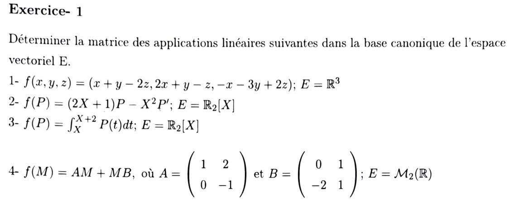
1) \(f(x,y,z)=(x+y-2z,\ 2x+y-z,\ -x-3y+2z)\), \(E=\mathbb R^3\)
\(f(1, 0, 0) = (1, 2, -1)\), \(f(0, 1, 0) = (1, 1, -3)\), \(f(0, 0, 1) = (-2, -1, 2)\).
2) \(f(P)=(2X+1)P-X^2P'\), \(E=\mathbb R_2[X]\)
Base \((1, X, X^2)\), avec \(1' = 0\), \(X' = 1\), \((X^2)' = 2X\) :
- \(f(1) = (2X + 1) = 1 + 2X\), coordonnées \((1, 2, 0)\) ;
- \(f(X) = (2X + 1)X - X^2 = X + X^2\), coordonnées \((0, 1, 1)\) ;
- \(f(X^2) = (2X + 1)X^2 - X^2\cdot2X = X^2\), coordonnées \((0, 0, 1)\).
On vérifie que \(f\) est à valeurs dans \(\mathbb R_2[X]\) : le terme en \(X^3\) de \(f(X^2)\) s'annule (\(2X^3 - 2X^3 = 0\)).
3) \(f(P)=\displaystyle\int_X^{X+2}P(t)\,dt\), \(E=\mathbb R_2[X]\)
Pour \(P = X^k\) : \(\displaystyle\int_X^{X+2} t^k\,dt = \dfrac{(X + 2)^{k+1} - X^{k+1}}{k + 1}\).
- \(f(1) = 2\), coordonnées \((2, 0, 0)\) ;
- \(f(X) = \dfrac{(X + 2)^2 - X^2}{2} = 2X + 2\), coordonnées \((2, 2, 0)\) ;
- \(f(X^2) = \dfrac{(X + 2)^3 - X^3}{3} = 2X^2 + 4X + \dfrac83\), coordonnées \(\left(\frac83, 4, 2\right)\).
4) \(f(M)=AM+MB\), \(A=\begin{pmatrix}1&2\\0&-1\end{pmatrix}\), \(B=\begin{pmatrix}0&1\\-2&1\end{pmatrix}\), \(E=\mathcal M_2(\mathbb R)\)
Étape 1 : la base
Base canonique \((E_{11}, E_{12}, E_{21}, E_{22})\) de \(\mathcal M_2(\mathbb R)\) ; la matrice \(\begin{pmatrix}a&b\\c&d\end{pmatrix}\) a pour coordonnées \((a, b, c, d)\).
Étape 2 : les images
- \(f(E_{11}) = \begin{pmatrix}1&0\\0&0\end{pmatrix} + \begin{pmatrix}0&1\\0&0\end{pmatrix} = \begin{pmatrix}1&1\\0&0\end{pmatrix}\), coordonnées \((1, 1, 0, 0)\) ;
- \(f(E_{12}) = \begin{pmatrix}0&1\\0&0\end{pmatrix} + \begin{pmatrix}-2&1\\0&0\end{pmatrix} = \begin{pmatrix}-2&2\\0&0\end{pmatrix}\), coordonnées \((-2, 2, 0, 0)\) ;
- \(AE_{21} = \begin{pmatrix}2&0\\-1&0\end{pmatrix}\) et \(E_{21}B = \begin{pmatrix}0&0\\0&1\end{pmatrix}\), donc \(f(E_{21}) = \begin{pmatrix}2&0\\-1&1\end{pmatrix}\), coordonnées \((2, 0, -1, 1)\) ;
- \(AE_{22} = \begin{pmatrix}0&2\\0&-1\end{pmatrix}\) et \(E_{22}B = \begin{pmatrix}0&0\\-2&1\end{pmatrix}\), donc \(f(E_{22}) = \begin{pmatrix}0&2\\-2&0\end{pmatrix}\), coordonnées \((0, 2, -2, 0)\).
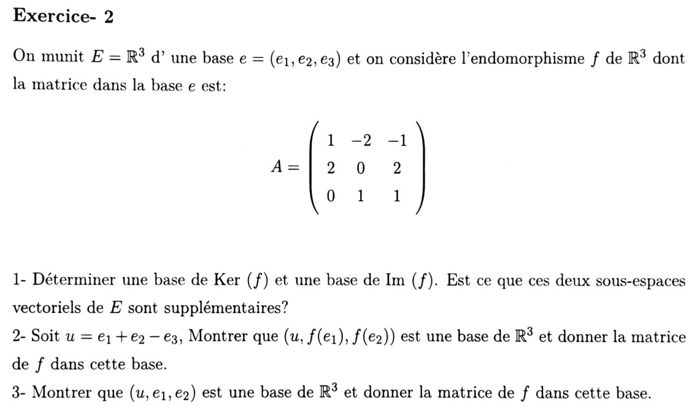
1) Base de \(\operatorname{Ker}f\), base de \(\operatorname{Im}f\), supplémentaires ?
Étape 1 : noyau
\[ \begin{cases}x - 2y - z = 0\\ 2x + 2z = 0\\ y + z = 0\end{cases} \iff z = -x,\ y = x \](la première équation donne \(x - 2x + x = 0\), vérifiée). Donc \(\operatorname{Ker}f = \operatorname{Vect}(u)\), avec \(u = (1, 1, -1)\).
Étape 2 : image
Les colonnes sont \(f(e_1) = (1, 2, 0)\), \(f(e_2) = (-2, 0, 1)\), \(f(e_3) = (-1, 2, 1)\), avec \(f(e_1) + f(e_2) = f(e_3)\). Les deux premières sont libres, et \(\operatorname{rg}f = 3 - 1 = 2\) (théorème du rang).
Étape 3 : supplémentaires ?
Ici \(1 + 2 = 3\). Si \(u = af(e_1) + bf(e_2)\), la 3ᵉ coordonnée donne \(b = -1\), la 2ᵉ \(a = \frac12\), et la 1ʳᵉ \(a - 2b = \frac52 \neq 1\) : contradiction. Donc \(u \notin \operatorname{Im}f\) et l'intersection est \(\{0\}\).
2) \((u,f(e_1),f(e_2))\) est une base ; matrice de \(f\) dans cette base
Étape 1 : c'est une base
\(P = \begin{pmatrix}1&1&-2\\1&2&0\\-1&0&1\end{pmatrix}\), et en développant selon la 3ᵉ ligne :
\[ \det P = (-1)\begin{vmatrix}1&-2\\2&0\end{vmatrix} + 1\begin{vmatrix}1&1\\1&2\end{vmatrix} = -4 + 1 = -3 \neq 0 \]Étape 2 : images des vecteurs de la base
- \(f(u) = 0\) : colonne \((0, 0, 0)\).
- \(f(f(e_1)) = A\begin{pmatrix}1\\2\\0\end{pmatrix} = (-3, 2, 2) = f(e_1) + 2f(e_2)\) : colonne \((0, 1, 2)\).
- \(f(f(e_2)) = A\begin{pmatrix}-2\\0\\1\end{pmatrix} = (-3, -2, 1) = -f(e_1) + f(e_2)\) : colonne \((0, -1, 1)\).
3) \((u,e_1,e_2)\) est une base ; matrice de \(f\) dans cette base
Étape 1 : c'est une base
Matrice des colonnes \(u, e_1, e_2\) : \(\begin{pmatrix}1&1&0\\1&0&1\\-1&0&0\end{pmatrix}\), de déterminant \(-1 \neq 0\). Directement : \(e_3 = e_1 + e_2 - u\).
Étape 2 : images
- \(f(u) = 0\) : \((0, 0, 0)\).
- \(f(e_1) = (1, 2, 0) = e_1 + 2e_2\) : \((0, 1, 2)\).
- \(f(e_2) = (-2, 0, 1) = -2e_1 + e_3 = -u - e_1 + e_2\) : \((-1, -1, 1)\).
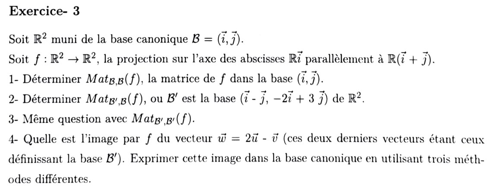
1) \(\operatorname{Mat}_{\mathcal B,\mathcal B}(f)\)
Étape 1 : ce que fait \(f\)
\(f(\vec\imath) = \vec\imath\) (vecteur de l'axe, fixé) et \(f(\vec\imath + \vec\jmath) = \vec0\) (vecteur de la direction).
Étape 2 : en déduire \(f(\vec\jmath)\)
\[ f(\vec\jmath) = f\big((\vec\imath + \vec\jmath) - \vec\imath\big) = \vec0 - \vec\imath = -\vec\imath \]2) \(\operatorname{Mat}_{\mathcal B',\mathcal B}(f)\), \(\mathcal B'=(\vec\imath-\vec\jmath,\,-2\vec\imath+3\vec\jmath)\)
Étape 1 : la base \(\mathcal B'\)
\(b_1' = (1, -1)\), \(b_2' = (-2, 3)\), avec \(\det\begin{pmatrix}1&-2\\-1&3\end{pmatrix} = 1 \neq 0\).
Étape 2 : images, exprimées dans la base d'arrivée \(\mathcal B\)
\[ f(b_1') = f(1, -1) = (2, 0) = 2\vec\imath \qquad f(b_2') = f(-2, 3) = (-5, 0) = -5\vec\imath \]3) \(\operatorname{Mat}_{\mathcal B'}(f)=\operatorname{Mat}_{\mathcal B',\mathcal B'}(f)\)
Étape 1 : l'inverse de \(P\)
\(P^{-1} = \begin{pmatrix}3&2\\1&1\end{pmatrix}\), donc \(\vec\imath = 3b_1' + b_2'\) et \(\vec\jmath = 2b_1' + b_2'\).
Étape 2 : exprimer les images dans \(\mathcal B'\)
\[ f(b_1') = 2\vec\imath = 6b_1' + 2b_2' \qquad f(b_2') = -5\vec\imath = -15b_1' - 5b_2' \]Contrôle : trace \(6 - 5 = 1\) et déterminant \(-30 + 30 = 0\), comme pour \(\begin{pmatrix}1&-1\\0&0\end{pmatrix}\) (la trace et le déterminant ne changent pas par changement de base).
4) Image de \(\vec w=2\vec u-\vec v\) (avec \(\vec u=b_1'\), \(\vec v=b_2'\)) : trois méthodes
Les coordonnées de \(\vec w\) dans \(\mathcal B'\) sont \((2, -1)\) ; dans la base canonique, \(\vec w = 2(1, -1) - (-2, 3) = (4, -5)\).
- Méthode 1 (matrice canonique) : \(\begin{pmatrix}1&-1\\0&0\end{pmatrix}\binom{4}{-5} = \binom90\).
- Méthode 2 (\(\operatorname{Mat}_{\mathcal B',\mathcal B}\), départ \(\mathcal B'\), arrivée canonique) : \(\begin{pmatrix}2&-5\\0&0\end{pmatrix}\binom{2}{-1} = \binom90\).
- Méthode 3 (\(\operatorname{Mat}_{\mathcal B'}\), résultat dans \(\mathcal B'\)) : \(\begin{pmatrix}6&-15\\2&-5\end{pmatrix}\binom{2}{-1} = \binom{27}{9}_{\mathcal B'}\), soit \(27(1, -1) + 9(-2, 3) = (9, 0)\).
- Contrôle par linéarité : \(2f(\vec u) - f(\vec v) = 2(2, 0) - (-5, 0) = (9, 0)\).
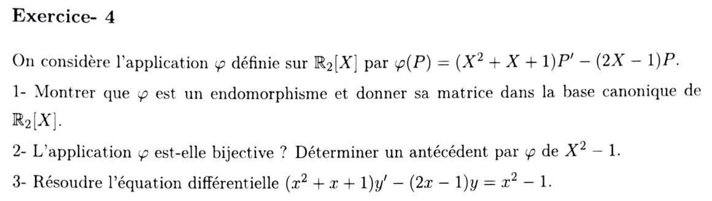
1) \(\varphi\) est un endomorphisme ; matrice dans la base canonique
Étape 1 : linéarité
La dérivation est linéaire, donc \(\varphi(\lambda P + Q) = \lambda\varphi(P) + \varphi(Q)\).
Étape 2 : à valeurs dans \(\mathbb R_2[X]\)
Pour \(P = aX^2 + bX + c\), le terme en \(X^3\) de \((X^2 + X + 1)(2aX + b) - (2X - 1)(aX^2 + bX + c)\) vaut \(2a - 2a = 0\).
Étape 3 : images de \((1, X, X^2)\)
- \(\varphi(1) = -(2X - 1) = 1 - 2X\), coordonnées \((1, -2, 0)\) ;
- \(\varphi(X) = (X^2 + X + 1) - (2X - 1)X = -X^2 + 2X + 1\), coordonnées \((1, 2, -1)\) ;
- \(\varphi(X^2) = 2X(X^2 + X + 1) - (2X - 1)X^2 = 3X^2 + 2X\), coordonnées \((0, 2, 3)\).
2) \(\varphi\) bijective ? Antécédent de \(X^2-1\)
Étape 1 : déterminant
\[ \det M = 1\begin{vmatrix}2&2\\-1&3\end{vmatrix} - 1\begin{vmatrix}-2&2\\0&3\end{vmatrix} = 8 + 6 = 14 \neq 0 \]\(M\) est inversible : \(\varphi\) est bijective.
Étape 2 : antécédent de \(X^2 - 1\)
Pour \(P = aX^2 + bX + c\), on résout \(M\begin{pmatrix}c\\b\\a\end{pmatrix} = \begin{pmatrix}-1\\0\\1\end{pmatrix}\) :
\[ \begin{cases}c + b = -1\\ -2c + 2b + 2a = 0\\ -b + 3a = 1\end{cases} \](1) donne \(c = -1 - b\). (2) donne \(a = -1 - 2b\). (3) donne \(-b + 3(-1 - 2b) = 1\), soit \(b = -\frac47\), puis \(a = \frac17\) et \(c = -\frac37\).
Vérification : \((X^2 + X + 1)(2X - 4) - (2X - 1)(X^2 - 4X - 3) = (2X^3 - 2X^2 - 2X - 4) - (2X^3 - 9X^2 - 2X + 3) = 7X^2 - 7\), donc \(\varphi(P_0) = X^2 - 1\).
3) Résoudre \((x^2+x+1)y'-(2x-1)y=x^2-1\)
Étape 1 : structure des solutions
\(x^2 + x + 1 > 0\) (discriminant \(-3\)), donc on résout sur \(\mathbb R\). Une solution particulière est le polynôme \(P_0\) de la question 2.
Étape 2 : équation homogène
\(\dfrac{y'}{y} = \dfrac{2x - 1}{x^2 + x + 1}\). On écrit \(2x - 1 = (2x + 1) - 2\), avec \((x^2 + x + 1)' = 2x + 1\) :
\[ \int\frac{2x - 1}{x^2 + x + 1}\,dx = \ln(x^2 + x + 1) - 2\int\frac{dx}{x^2 + x + 1} \]Forme canonique \(x^2 + x + 1 = \left(x + \frac12\right)^2 + \frac34\), d'où \(\displaystyle\int\frac{dx}{x^2 + x + 1} = \frac{2}{\sqrt3}\arctan\frac{2x + 1}{\sqrt3}\) :
\[ y_h(x) = C\,(x^2 + x + 1)\exp\left(-\frac{4}{\sqrt3}\arctan\frac{2x + 1}{\sqrt3}\right) \]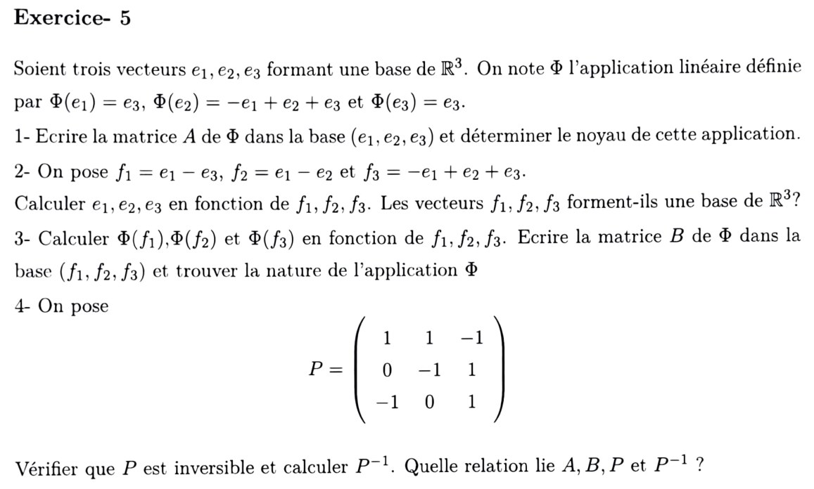
1) Matrice \(A\) de \(\Phi\) dans \((e_1,e_2,e_3)\) et noyau
Étape 1 : la matrice
\(\Phi(e_1) = e_3\), \(\Phi(e_2) = -e_1 + e_2 + e_3\), \(\Phi(e_3) = e_3\) :
\[ A = \begin{pmatrix}0&-1&0\\0&1&0\\1&1&1\end{pmatrix} \]Étape 2 : noyau
\(A\begin{pmatrix}x\\y\\z\end{pmatrix} = (-y, y, x + y + z) = 0\) donne \(y = 0\) et \(z = -x\).
2) \(f_1=e_1-e_3,\ f_2=e_1-e_2,\ f_3=-e_1+e_2+e_3\) : \(e_i\) en fonction des \(f_j\) ; base ?
- \(f_2 + f_3 = e_3\).
- \(f_1 + e_3 = e_1\), donc \(e_1 = f_1 + f_2 + f_3\).
- \(e_2 = e_1 - f_2 = f_1 + f_3\).
3) \(\Phi(f_j)\) ; matrice \(B\) dans \((f_1,f_2,f_3)\) ; nature de \(\Phi\)
- \(\Phi(f_1) = \Phi(e_1) - \Phi(e_3) = e_3 - e_3 = 0\) ;
- \(\Phi(f_2) = \Phi(e_1) - \Phi(e_2) = e_3 - (-e_1 + e_2 + e_3) = e_1 - e_2 = f_2\) ;
- \(\Phi(f_3) = -\Phi(e_1) + \Phi(e_2) + \Phi(e_3) = -e_1 + e_2 + e_3 = f_3\).
4) \(P\) inversible, \(P^{-1}\), relation entre \(A,B,P,P^{-1}\)
Étape 1 : la matrice de passage
Les colonnes de \(P\) sont les coordonnées de \(f_1, f_2, f_3\) dans \((e)\) :
\[ P = \begin{pmatrix}1&1&-1\\0&-1&1\\-1&0&1\end{pmatrix} \qquad \det P = 1\begin{vmatrix}-1&1\\0&1\end{vmatrix} + 0 + (-1)\begin{vmatrix}1&-1\\-1&1\end{vmatrix} = -1 - 0 = -1 \neq 0 \quad(\text{développement selon la 1ʳᵉ colonne}) \]Étape 2 : l'inverse
D'après la question 2, les colonnes de \(P^{-1}\) donnent \(e_1, e_2, e_3\) dans la base \((f)\) :
\[ P^{-1} = \begin{pmatrix}1&1&0\\1&0&1\\1&1&1\end{pmatrix} \]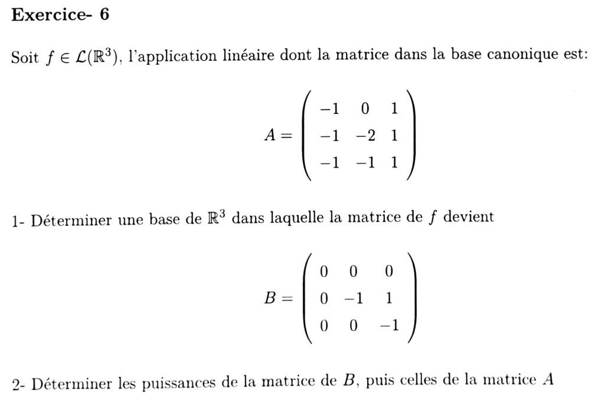
1) Base \((b_1,b_2,b_3)\) dans laquelle la matrice de \(f\) est \(B\)
Étape 1 : lire les colonnes de \(B\)
\[ f(b_1) = 0 \qquad f(b_2) = -b_2 \qquad f(b_3) = b_2 - b_3 \]Il faut \(b_1 \in \ker f\), \(b_2\) vecteur propre pour \(-1\), et \(b_3\) tel que \((f + \mathrm{id})(b_3) = b_2\).
Étape 2 : \(b_1\)
\(Av = 0\) donne \(z = x\), \(y = 0\) : on prend \(b_1 = (1, 0, 1)\).
Étape 3 : \(b_2\)
\((A + I)v = 0\) avec \(A + I = \begin{pmatrix}0&0&1\\-1&-1&1\\-1&-1&2\end{pmatrix}\) donne \(z = 0\) et \(x + y = 0\) : \(b_2 = (1, -1, 0)\).
Étape 4 : \(b_3\)
\((A + I)b_3 = b_2\) donne \(z = 1\), \(-x - y + z = -1\), soit \(x + y = 2\) : \(b_3 = (2, 0, 1)\).
Étape 5 : vérifications
- \(Ab_1 = 0\) ;
- \(Ab_2 = (-1, 1, 0) = -b_2\) ;
- \(Ab_3 = (-1, -1, -1) = b_2 - b_3\).
\(P = \begin{pmatrix}1&1&2\\0&-1&0\\1&0&1\end{pmatrix}\), \(\det P = 1 \neq 0\) : c'est une base.
2) Puissances de \(B\), puis de \(A\)
Étape 1 : puissances de \(B\)
\(B\) est diagonale par blocs : le bloc \(1\times1\) vaut 0, et le bloc \(T = -I_2 + N\) avec \(N = \begin{pmatrix}0&1\\0&0\end{pmatrix}\), \(N^2 = 0\).
Étape 2 : \(A^n = PB^nP^{-1}\)
\(P^{-1} = \begin{pmatrix}-1&-1&2\\0&-1&0\\1&1&-1\end{pmatrix}\). Avec \(s = (-1)^n\), donc \(n(-1)^{n-1} = -ns\) :
\[ PB^n = \begin{pmatrix}0&s&(2 - n)s\\0&-s&ns\\0&0&s\end{pmatrix} \qquad A^n = PB^nP^{-1} = s\begin{pmatrix}2 - n&1 - n&n - 2\\n&n + 1&-n\\1&1&-1\end{pmatrix} \]Contrôles : \(n = 1\) redonne \(A\) ; \(n = 2\) donne \(\begin{pmatrix}0&-1&0\\2&3&-2\\1&1&-1\end{pmatrix} = A^2\).
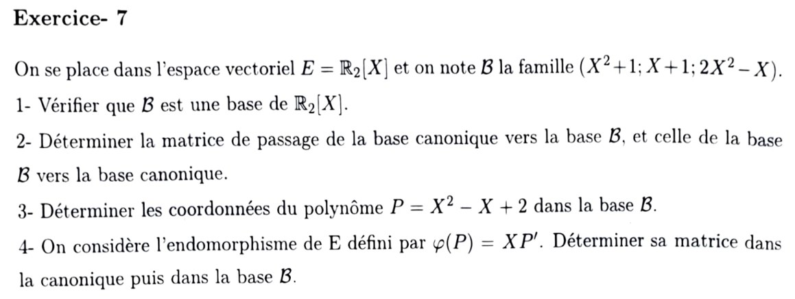
1) \(\mathcal B=(X^2+1,\ X+1,\ 2X^2-X)\) est une base de \(\mathbb R_2[X]\)
Coordonnées dans \((1, X, X^2)\) : \(X^2 + 1 \to (1, 0, 1)\), \(X + 1 \to (1, 1, 0)\), \(2X^2 - X \to (0, -1, 2)\).
\[ P = \begin{pmatrix}1&1&0\\0&1&-1\\1&0&2\end{pmatrix} \qquad \det P = 1\begin{vmatrix}1&-1\\0&2\end{vmatrix} - 1\begin{vmatrix}0&-1\\1&2\end{vmatrix} = 2 - 1 = 1 \neq 0 \]2) Matrices de passage canonique \(\to\mathcal B\) et \(\mathcal B\to\) canonique
Les colonnes sont les coordonnées de la nouvelle base dans l'ancienne :
\[ P_{\text{can}\to\mathcal B} = P = \begin{pmatrix}1&1&0\\0&1&-1\\1&0&2\end{pmatrix} \qquad P_{\mathcal B\to\text{can}} = P^{-1} = \begin{pmatrix}2&-2&-1\\-1&2&1\\-1&1&1\end{pmatrix} \]Vérification de \(PP^{-1} = I_3\) : première ligne \((1, 1, 0)\) donne \((2 - 1, -2 + 2, -1 + 1)\) ; deuxième ligne \((0, 1, -1)\) donne \((-1 + 1, 2 - 1, 1 - 1)\) ; troisième ligne \((1, 0, 2)\) donne \((2 - 2, -2 + 2, -1 + 2)\).
3) Coordonnées de \(P=X^2-X+2\) dans \(\mathcal B\)
Coordonnées canoniques : \((2, -1, 1)\).
\[ \begin{pmatrix}2&-2&-1\\-1&2&1\\-1&1&1\end{pmatrix}\begin{pmatrix}2\\-1\\1\end{pmatrix} = \begin{pmatrix}4 + 2 - 1\\-2 - 2 + 1\\-2 - 1 + 1\end{pmatrix} = \begin{pmatrix}5\\-3\\-2\end{pmatrix} \]Vérification : \(5X^2 + 5 - 3X - 3 - 4X^2 + 2X = X^2 - X + 2\).
4) \(\varphi(P)=XP'\) : matrice dans la canonique puis dans \(\mathcal B\)
Étape 1 : dans la base canonique
\(\varphi(1) = 0\), \(\varphi(X) = X\), \(\varphi(X^2) = 2X^2\) :
\[ D = \operatorname{Mat}_{\text{can}}(\varphi) = \begin{pmatrix}0&0&0\\0&1&0\\0&0&2\end{pmatrix} \]Étape 2 : dans \(\mathcal B\)
\(\operatorname{Mat}_{\mathcal B}(\varphi) = P^{-1}DP\). On a \(DP = \begin{pmatrix}0&0&0\\0&1&-1\\2&0&4\end{pmatrix}\), puis :
\[ P^{-1}(DP) = \begin{pmatrix}2&-2&-1\\-1&2&1\\-1&1&1\end{pmatrix}\begin{pmatrix}0&0&0\\0&1&-1\\2&0&4\end{pmatrix} = \begin{pmatrix}-2&-2&-2\\2&2&2\\2&1&3\end{pmatrix} \]Vérification : \(\varphi(X^2 + 1) = 2X^2\), de coordonnées \(P^{-1}(0, 0, 2) = (-2, 2, 2)\), la première colonne. Trace conservée : \(-2 + 2 + 3 = 3 = 0 + 1 + 2\).
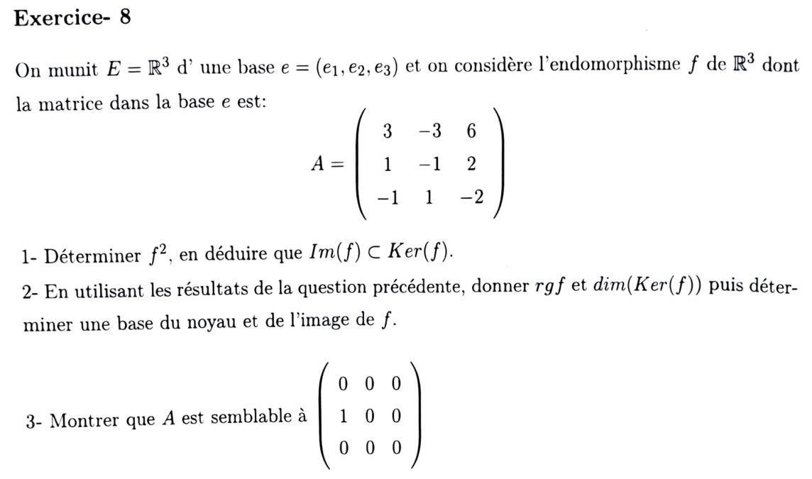
1) Calcul de \(f^2\) ; \(\operatorname{Im}f\subset\operatorname{Ker}f\)
Étape 1 : le produit \(A \times A\) (ligne par colonne)
- Ligne \((3, -3, 6)\) : \(9 - 3 - 6 = 0\), \(-9 + 3 + 6 = 0\), \(18 - 6 - 12 = 0\).
- Ligne \((1, -1, 2)\) : \(3 - 1 - 2 = 0\), \(-3 + 1 + 2 = 0\), \(6 - 2 - 4 = 0\).
- Ligne \((-1, 1, -2)\) : \(-3 + 1 + 2 = 0\), \(3 - 1 - 2 = 0\), \(-6 + 2 + 4 = 0\).
Étape 2 : l'inclusion
Si \(y \in \operatorname{Im}f\), \(y = f(x)\), alors \(f(y) = f^2(x) = 0\), donc \(y \in \operatorname{Ker}f\).
2) \(\operatorname{rg}f\), \(\dim\operatorname{Ker}f\), bases du noyau et de l'image
Étape 1 : image
Les colonnes sont \(c_1 = (3, 1, -1)\), \(c_2 = -c_1\), \(c_3 = 2c_1\) : \(\operatorname{Im}f = \operatorname{Vect}(c_1)\), de rang 1.
Étape 2 : noyau
Théorème du rang : \(\dim\operatorname{Ker}f = 3 - 1 = 2\). Les trois lignes sont proportionnelles à \((1, -1, 2)\) : le noyau est le plan \(x - y + 2z = 0\), soit \((x, y, z) = y(1, 1, 0) + z(-2, 0, 1)\). On vérifie \(c_1 \in \operatorname{Ker}f\) : \(3 - 1 - 2 = 0\).
3) \(A\) est semblable à \(\begin{pmatrix}0&0&0\\1&0&0\\0&0&0\end{pmatrix}\)
Étape 1 : la base cherchée
On veut \(f(b_1) = b_2\), \(f(b_2) = 0\), \(f(b_3) = 0\) : la matrice a alors sa colonne 1 égale à \((0, 1, 0)\) et ses colonnes 2 et 3 nulles.
Étape 2 : le choix
- \(b_1 = e_1 = (1, 0, 0)\), car \(f(e_1) \neq 0\) ;
- \(b_2 = f(b_1) = (3, 1, -1)\), dans \(\operatorname{Ker}f\) (car \(\operatorname{Im}f \subset \operatorname{Ker}f\)), donc \(f(b_2) = 0\) ;
- \(b_3 = (1, 1, 0) \in \operatorname{Ker}f\), non colinéaire à \(b_2\).
Étape 3 : c'est une base
\(Q = \begin{pmatrix}1&3&1\\0&1&1\\0&-1&0\end{pmatrix}\), \(\det Q = 1\cdot(0 + 1) = 1 \neq 0\).
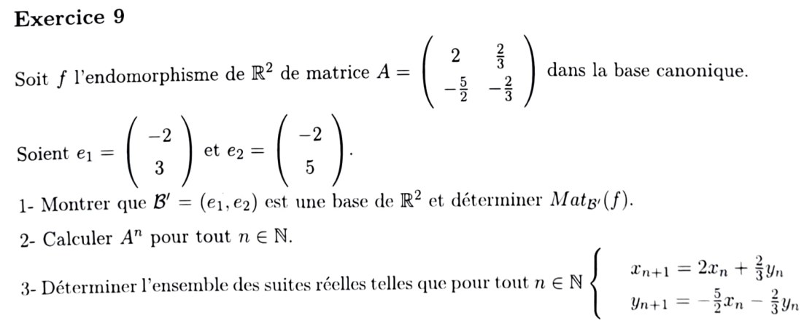
1) \(\mathcal B'=(e_1,e_2)\) est une base de \(\mathbb R^2\) ; \(\operatorname{Mat}_{\mathcal B'}(f)\)
Étape 1 : base
\(P = \begin{pmatrix}-2&-2\\3&5\end{pmatrix}\), \(\det P = -10 + 6 = -4 \neq 0\).
Étape 2 : images
\[ f(e_1) = Ae_1 = \binom{-4 + 2}{5 - 2} = \binom{-2}{3} = e_1 \qquad f(e_2) = Ae_2 = \binom{-4 + \frac{10}{3}}{5 - \frac{10}{3}} = \frac13\binom{-2}{5} = \frac13e_2 \]2) \(A^n\) pour tout \(n\in\mathbb N\)
\(A^n = PD^nP^{-1}\) avec \(D^n = \operatorname{diag}(1, 3^{-n})\) et \(P^{-1} = \dfrac{1}{-4}\begin{pmatrix}5&2\\-3&-2\end{pmatrix} = \begin{pmatrix}-\frac54&-\frac12\\\frac34&\frac12\end{pmatrix}\). Avec \(r = 3^{-n}\) :
\[ PD^n = \begin{pmatrix}-2&-2r\\3&5r\end{pmatrix} \qquad A^n = \begin{pmatrix}\frac52 - \frac32r&1 - r\\-\frac{15}{4} + \frac{15}{4}r&-\frac32 + \frac52r\end{pmatrix} \]Contrôles : \(n = 0\) donne \(I_2\) ; \(n = 1\) donne \(A\). Limite : \(A^n \to \begin{pmatrix}\frac52&1\\-\frac{15}{4}&-\frac32\end{pmatrix}\), projecteur sur \(\operatorname{Vect}(e_1)\) parallèlement à \(\operatorname{Vect}(e_2)\).
3) Suites telles que \(x_{n+1}=2x_n+\frac23y_n\), \(y_{n+1}=-\frac52x_n-\frac23y_n\)
Étape 1 : écriture matricielle
Avec \(X_n = \binom{x_n}{y_n}\) : \(X_{n+1} = AX_n\), donc \(X_n = A^nX_0\) pour tout \((x_0, y_0) \in \mathbb R^2\).
Étape 2 : forme géométrique
On décompose \(X_0 = ae_1 + be_2\). Comme \(f(e_1) = e_1\) et \(f(e_2) = \frac13e_2\) :
\[ X_n = a\,e_1 + b\,3^{-n}e_2 \]Vérification : \(AX_n = a\,Ae_1 + b\,3^{-n}Ae_2 = a\,e_1 + b\,3^{-(n+1)}e_2 = X_{n+1}\).
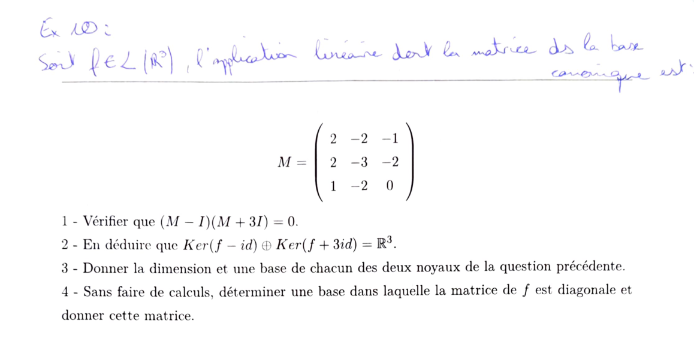
1) Vérifier que \((M-I)(M+3I)=0\)
\[ M - I = \begin{pmatrix}1&-2&-1\\2&-4&-2\\1&-2&-1\end{pmatrix} \qquad M + 3I = \begin{pmatrix}5&-2&-1\\2&0&-2\\1&-2&3\end{pmatrix} \]Ligne 1 de \(M - I\) par les colonnes de \(M + 3I\) : \((5 - 4 - 1,\ -2 + 0 + 2,\ -1 + 4 - 3) = (0, 0, 0)\). Ligne 2 : \((10 - 8 - 2,\ -4 + 4,\ -2 + 8 - 6) = 0\). Ligne 3 : même résultat que la ligne 1.
2) En déduire \(\operatorname{Ker}(f-\mathrm{id})\oplus\operatorname{Ker}(f+3\,\mathrm{id})=\mathbb R^3\)
Étape 1 : décomposer \(x\)
On pose \(a = \frac14(M + 3I)x\) et \(b = \frac14(I - M)x\) : \(a + b = x\).
Étape 2 : \(a\) et \(b\) sont dans les bons noyaux
- \((M - I)a = \frac14(M - I)(M + 3I)x = 0\) : \(a \in \operatorname{Ker}(f - \mathrm{id})\).
- \((M + 3I)b = \frac14(M + 3I)(I - M)x = \frac14(3I - 2M - M^2)x = 0\) (car \(M^2 = 3I - 2M\)) : \(b \in \operatorname{Ker}(f + 3\,\mathrm{id})\).
Étape 3 : intersection nulle
Si \(v\) est dans les deux noyaux, \(Mv = v\) et \(Mv = -3v\), donc \(4v = 0\).
3) Dimension et base de chacun des deux noyaux
- \(\operatorname{Ker}(f - \mathrm{id})\) : \((M - I)X = 0 \iff x - 2y - z = 0\) (les lignes sont proportionnelles). Base \(u_1 = (2, 1, 0)\), \(u_2 = (1, 0, 1)\), dimension 2.
- \(\operatorname{Ker}(f + 3\,\mathrm{id})\) : la ligne 2 donne \(x = z\), la ligne 1 donne \(y = 2x\). Base \(u_3 = (1, 2, 1)\), dimension 1. Contrôle ligne 3 : \(1 - 4 + 3 = 0\).
4) Base diagonalisante, matrice diagonale (sans calcul)
En réunissant une base de chaque noyau, on obtient une base de \(\mathbb R^3\) (question 2), avec \(f(u_1) = u_1\), \(f(u_2) = u_2\), \(f(u_3) = -3u_3\).
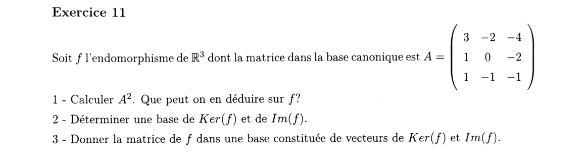
1) Calcul de \(A^2\) ; conséquence pour \(f\)
Ligne 1 de \(A\) par les colonnes de \(A\) : \((9 - 2 - 4,\ -6 + 4,\ -12 + 4 + 4) = (3, -2, -4)\). Ligne 2 : \((3 - 2,\ -2 + 2,\ -4 + 2) = (1, 0, -2)\). Ligne 3 : \((3 - 1 - 1,\ -2 + 1,\ -4 + 2 + 1) = (1, -1, -1)\).
2) Base de \(\operatorname{Ker}f\) et de \(\operatorname{Im}f\)
Étape 1 : noyau
\(AX = 0\) : la ligne 2 donne \(x = 2z\), la ligne 3 donne \(y = z\), et la ligne 1 est vérifiée (\(6z - 2z - 4z = 0\)).
Étape 2 : image
Pour un projecteur, \(\operatorname{Im}f = \operatorname{Ker}(f - \mathrm{id})\) : \((A - I)X = 0\) donne \(x - y - 2z = 0\). Base \((1, 1, 0)\), \((2, 0, 1)\).
Contrôle : \(A(1, 1, 0) = (1, 1, 0)\), \(A(2, 0, 1) = (2, 0, 1)\), \(A(2, 1, 1) = 0\).
3) Matrice de \(f\) dans une base de vecteurs de \(\operatorname{Ker}f\) et \(\operatorname{Im}f\)
Base \(u_1 = (2, 1, 1)\) (noyau), \(u_2 = (1, 1, 0)\), \(u_3 = (2, 0, 1)\) (image). \(P = \begin{pmatrix}2&1&2\\1&1&0\\1&0&1\end{pmatrix}\), \(\det P = 2 - 1 - 2 = -1 \neq 0\). Alors \(f(u_1) = 0\), \(f(u_2) = u_2\), \(f(u_3) = u_3\).
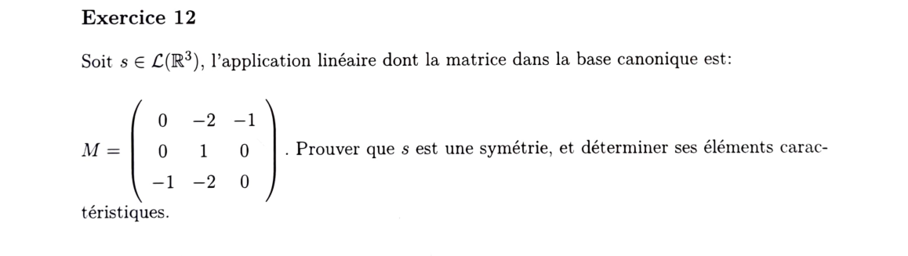
Prouver que \(s\) est une symétrie
Calcul de \(M^2\) : ligne 1 \(\to (0 + 0 + 1,\ 0 - 2 + 2,\ 0)= (1, 0, 0)\) ; ligne 2 \(\to (0, 1, 0)\) ; ligne 3 \(\to (0, 0, 1)\).
Éléments caractéristiques
Étape 1 : le plan fixe \(\operatorname{Ker}(s - \mathrm{id})\)
\(M - I = \begin{pmatrix}-1&-2&-1\\0&0&0\\-1&-2&-1\end{pmatrix}\) donne \(x + 2y + z = 0\). Base \((2, -1, 0)\), \((1, 0, -1)\). Contrôle : \(M(2, -1, 0) = (2, -1, 0)\).
Étape 2 : la direction \(\operatorname{Ker}(s + \mathrm{id})\)
\(M + I = \begin{pmatrix}1&-2&-1\\0&2&0\\-1&-2&1\end{pmatrix}\) : la ligne 2 donne \(y = 0\), la ligne 1 donne \(x = z\). Direction \(\operatorname{Vect}(1, 0, 1)\). Contrôle : \(M(1, 0, 1) = -(1, 0, 1)\).
Étape 3 : supplémentaires
\((1, 0, 1) \notin \mathcal P\), car \(1 + 0 + 1 = 2 \neq 0\) : \(\mathbb R^3 = \mathcal P \oplus \mathcal D\).
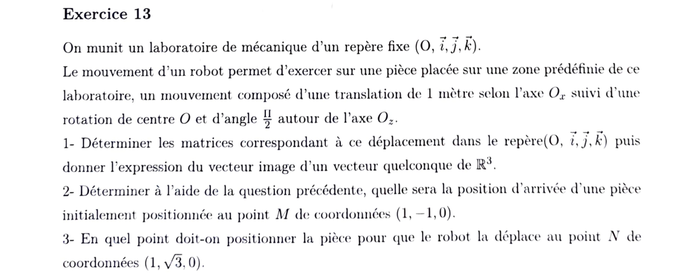
1) Matrices du déplacement et image d'un vecteur quelconque
Étape 1 : pourquoi les coordonnées homogènes
La translation \(t(x, y, z) = (x + 1, y, z)\) n'est pas linéaire (\(t(0) \neq 0\)). On passe en coordonnées homogènes \((x, y, z, 1)\) pour tout écrire avec des matrices \(4\times4\).
Étape 2 : les deux matrices
La rotation d'angle \(\frac\pi2\) autour de \(Oz\) est \((x, y) \mapsto (-y, x)\), \(z \mapsto z\) :
\[ T = \begin{pmatrix}1&0&0&1\\0&1&0&0\\0&0&1&0\\0&0&0&1\end{pmatrix} \qquad \mathrm{Rot} = \begin{pmatrix}0&-1&0&0\\1&0&0&0\\0&0&1&0\\0&0&0&1\end{pmatrix} \]Étape 3 : l'ordre
La translation agit d'abord, donc elle est à droite dans le produit :
\[ \mathcal A = \mathrm{Rot}\,T = \begin{pmatrix}0&-1&0&0\\1&0&0&1\\0&0&1&0\\0&0&0&1\end{pmatrix} \]2) Image de \(M(1,-1,0)\)
\[ \mathcal A\,(1, -1, 0, 1)^T = (1,\ 1 + 1,\ 0,\ 1)^T \]3) Point de départ pour arriver en \(N(1,\sqrt3,0)\)
On cherche \(P(x, y, z)\) tel que \((-y,\ x + 1,\ z) = (1, \sqrt3, 0)\) :
\[ y = -1 \qquad x = \sqrt3 - 1 \qquad z = 0 \]Contrôle : l'image de \(P\) est \((1,\ \sqrt3 - 1 + 1,\ 0) = (1, \sqrt3, 0)\).
📂 Documents donnés
Fichier original lié à ce chapitre. Cliquez pour ouvrir.
TD3 (p.1-3) + cours du chapitre 3 (p.4-20) (L. Graissot)
Cursus AM2 · Mathématiques · L. Graissot, 2026-2027. Cours complet ; TD3 : exercices 1 → 13 corrigés (pas de corrigé officiel — résolu maison). Voir aussi Ch2 — Applications linéaires.